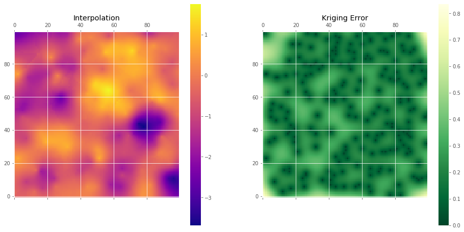

Getting Started¶
This is not the finished tutorial. I am just testing the docker image This notebook give a quick example of how scikit-gstat can be used to create meaningful variograms and utilize kriging classes to perform an interpolation.
[1]:
import os
import numpy as np
import pandas as pd
import matplotlib.pyplot as plt
from skgstat import Variogram, OrdinaryKriging
plt.style.use('ggplot')
os.environ['SKG_SUPPRESS'] = "true"
The data is located in the ./data subdirectory. We can load one of the examples and have a look at the data:
[2]:
data = pd.read_csv('./data/sample_sr.csv')
data.head()
[2]:
| x | y | z | |
|---|---|---|---|
| 0 | 94 | 20 | -0.394444 |
| 1 | 82 | 37 | -2.283663 |
| 2 | 43 | 13 | -0.546213 |
| 3 | 78 | 42 | -3.681384 |
| 4 | 50 | 28 | 0.504538 |
[3]:
fig, ax = plt.subplots(1, 1, figsize=(9, 9))
art = ax.scatter(data.x,data.y, s=50, c=data.z, cmap='plasma')
plt.colorbar(art)
[3]:
<matplotlib.colorbar.Colorbar at 0x23ed4923fc8>

Build a Variogram¶
[4]:
V = Variogram(data[['x', 'y']].values, data.z.values, normalize=False, maxlag=60, n_lags=15)
fig = V.plot()
Warning: 'harmonize' is deprecated and will be removedwith the next release. You can add a 'SKG_SUPPRESS' environment variable to suppress this warning.
Warning: compiled_model is deprecated and will be removed. Use Variogram.fitted_model instead. You can add an SKG_SUPPRESS environment variable to supress this warning.
e:\dropbox\python\scikit-gstat\skgstat\Variogram.py:1668: UserWarning: Matplotlib is currently using module://ipykernel.pylab.backend_inline, which is a non-GUI backend, so cannot show the figure.
fig.show()

Kriging¶
[5]:
ok = OrdinaryKriging(V, min_points=5, max_points=15, mode='exact')
[6]:
# build the target grid
xx, yy = np.mgrid[0:99:100j, 0:99:100j]
field = ok.transform(xx.flatten(), yy.flatten()).reshape(xx.shape)
s2 = ok.sigma.reshape(xx.shape)
[7]:
fig, axes = plt.subplots(1, 2, figsize=(16, 8))
art = axes[0].matshow(field.T, origin='lower', cmap='plasma')
axes[0].set_title('Interpolation')
plt.colorbar(art, ax=axes[0])
art = axes[1].matshow(s2.T, origin='lower', cmap='YlGn_r')
axes[1].set_title('Kriging Error')
plt.colorbar(art, ax=axes[1])
[7]:
<matplotlib.colorbar.Colorbar at 0x23ed58a2c48>
